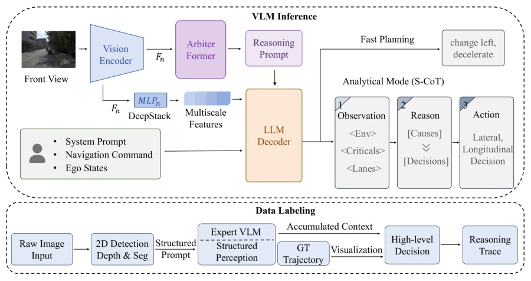
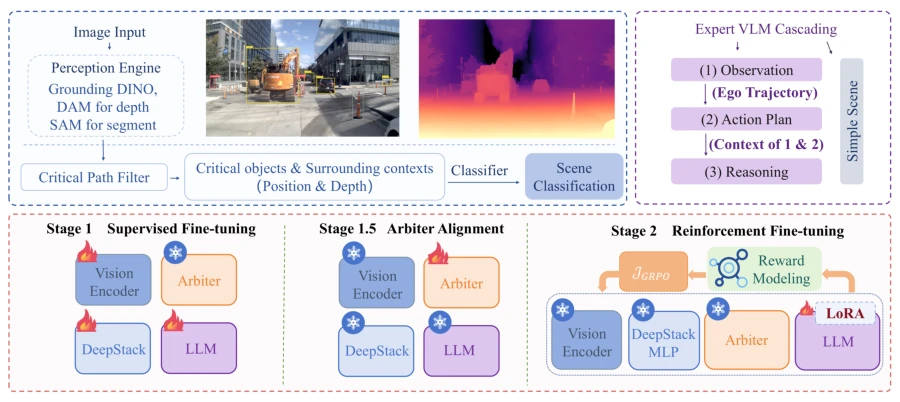
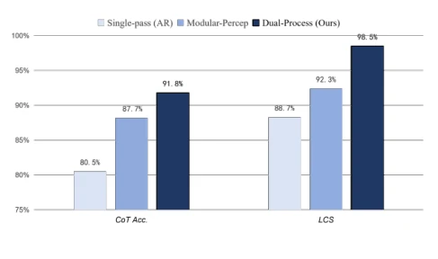
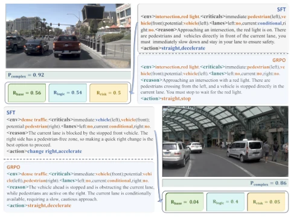
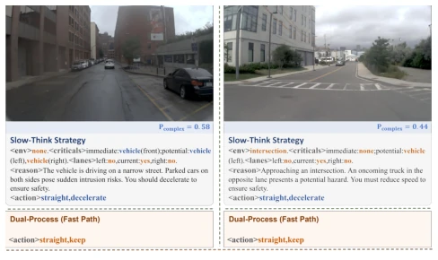
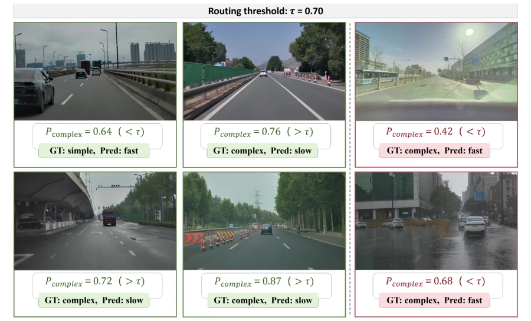
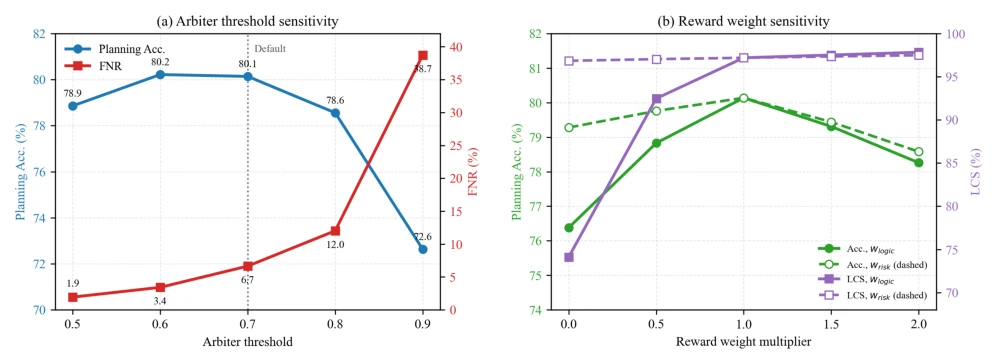

This paper adds a 'dual-system' neural circuit to autonomous driving planning; simple scenarios take the fast lane, while only complex scenarios activate 'thinking mode,' which aligns quite well with human intuition. S-CoT structured chain of thought combined with a rule validator attempts to solve the problem of VLMs fabricating reasons while driving erratically, a point worth praising. However, the so-called 'cognition' falters somewhat in long-tail scenarios; rain/fog conditions and traffic sign recognition collapse directly, indicating this 'brain' still relies too heavily on the training distribution. Most awkwardly, it only outputs discrete primitive actions, remaining distant from true end-to-end trajectory planning. It feels like putting a 'rule vest' on the VLM; essentially, it is still a stitching of imitation learning and reinforcement learning, so do not hype it as a general cognitive model. Furthermore, the router's interpretability remains vague, and black-box decisions remain a hazard in safety-critical domains.
Autonomous driving high-level planning requires knowledge-intensive decisions, but end-to-end models tend to fail in long-tail scenarios [7]. Although VLMs can generate CoT explanations, there are three pain points: first, structured supervision costs are high, and free text is hard to verify [15]; second, full-scene CoT reasoning latency is large, and resource allocation is uneven [45, 57]; third, generated reasons and actions may be inconsistent, lacking internal consistency checks [54, 38]. Existing methods such as DriveGPT4 [59] or Senna [21] connect perception and decision-making, but lack machine-parseable schemas and deterministic verification signals, leading to a disconnect between reasoning and action. Additionally, existing adaptive reasoning methods often couple routing with text generation, making it difficult to independently control recall rates in complex scenarios, limiting deployment efficiency.
The framework is based on the Qwen3-VL backbone, including an automated data engine, visual arbiter, and validator. The data engine utilizes perception foundation models and expert VLMs to generate structured chains of thought (S-CoT), requiring no manual annotation. During deployment, a lightweight visual Arbiter estimates scene complexity from multi-scale visual features, routing inputs to fast primitive action prediction or slow structured reasoning. Slow path outputs are checked by a deterministic rule validator for consistency between S-CoT fields and primitive actions, generating logic consistency rewards. Training is divided into three steps: SFT establishes the dual mode, Arbiter independent calibration, and finally using GRPO for verifiable reward reinforcement learning (RLVR), optimizing task accuracy, logic consistency, and risk avoidance.

Figure 1: Overview of the proposed dual-process architecture. The planner takes front-view images, navigation commands, and ego-vehicle states as input. A lightweight Arbiter estimates scene complexity and routes each input to fast meta-action prediction or slow structured reasoning. The automated data engine provides structured chain-of-thought (S-CoT) supervision, while rule-based verification supplies rewards that target consistency between the parsed reasoning fields and the final meta-action.

Figure 2: Automated data engine and hierarchical training workflow. The offline pipeline uses perception foundation models and an expert vision-language model (VLM) in sequence to generate structured chain-of-thought (S-CoT) annotations and scene-complexity labels. Training comprises a backbone supervised fine-tuning (SFT) warm-up followed by independent Arbiter calibration and Group Relative Policy Optimization (GRPO)-based slow-path optimization.
Evaluated on the NAVSIM test set, comparing zero-shot VLM, SFT baseline, and AlphaDrive, etc. Metrics include planning accuracy, F1, and Logic Consistency Score (LCS). Results: planning accuracy 80.14%, LCS reaches 97.20%, compared to static slow reasoning latency reduced by 17.39%. Ablation experiments show logic consistency reward is key to improving LCS. However, performance drops significantly on external long-tail subsets (e.g., low visibility, traffic signs), LCS drops below 85%, exposing the fragility of the routing mechanism under extreme conditions. Additionally, Arbiter threshold sensitivity analysis indicates that overly high thresholds sacrifice accuracy, while overly low ones increase latency, requiring trade-off selection.

Figure 3: Chain-of-thought (CoT) accuracy and Logical Con- sistency Score (LCS) of structured chain-of-thought (S-CoT) annotations generated by the three data pipelines on the 195- scene audit subset.

Figure 4: Qualitative comparison of reasoning–action consis- tency in a complex scene. The supervised fine-tuning (SFT) baseline produces an action that contradicts the perceived haz- ard, whereas the Group Relative Policy Optimization (GRPO)- aligned policy produces an action consistent with its stated reasoning.

Figure 5: Qualitative example of over-reasoning in a simple scene. In this example, full structured reasoning produces a hallucinated risk and an unnecessary conservative maneuver, whereas dynamic routing avoids invoking the slow reasoning path.

Figure 6: Qualitative routing analysis in out-of-distribution (OOD) and long-tail driving scenarios. The left panel shows correctly routed examples, with simple scenes assigned to the fast path and complex scenes assigned to the slow path. The right panel shows false-negative cases in which complex scenes receive low complexity scores and are incorrectly assigned to the fast path. With the routing threshold set to 𝜏= 0.70, samples satisfying 𝑃complex ≥𝜏are assigned to the slow path.

Figure 7: Sensitivity to the Arbiter threshold and verifiable-reward weights. The left panel reports planning accuracy and false- negative rate (FNR) at five thresholds; the dotted line marks the default setting (𝜏= 0.7), selected based on the joint trade-off among planning accuracy, FNR, routing F1, and latency. In the right panel, each verifiable-reward weight is varied while the other remains at its default value of 1.0 and the base-task reward is held fixed.